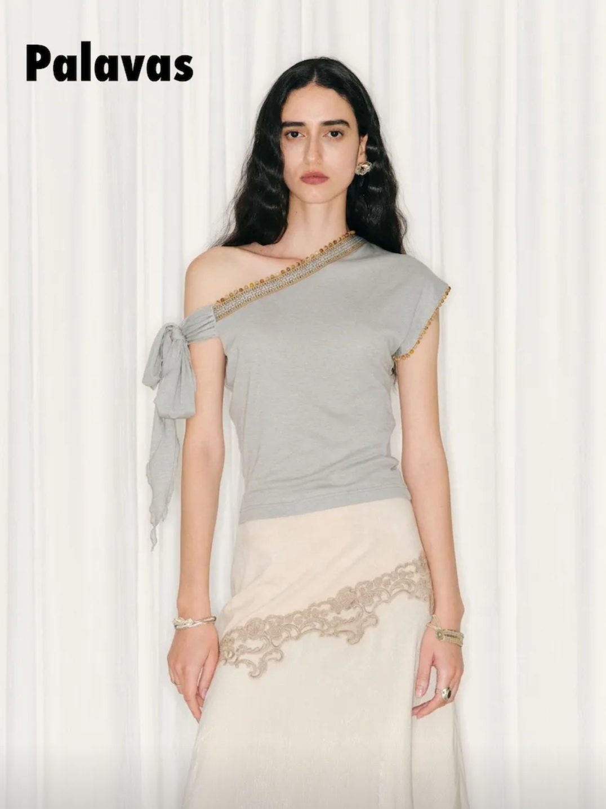
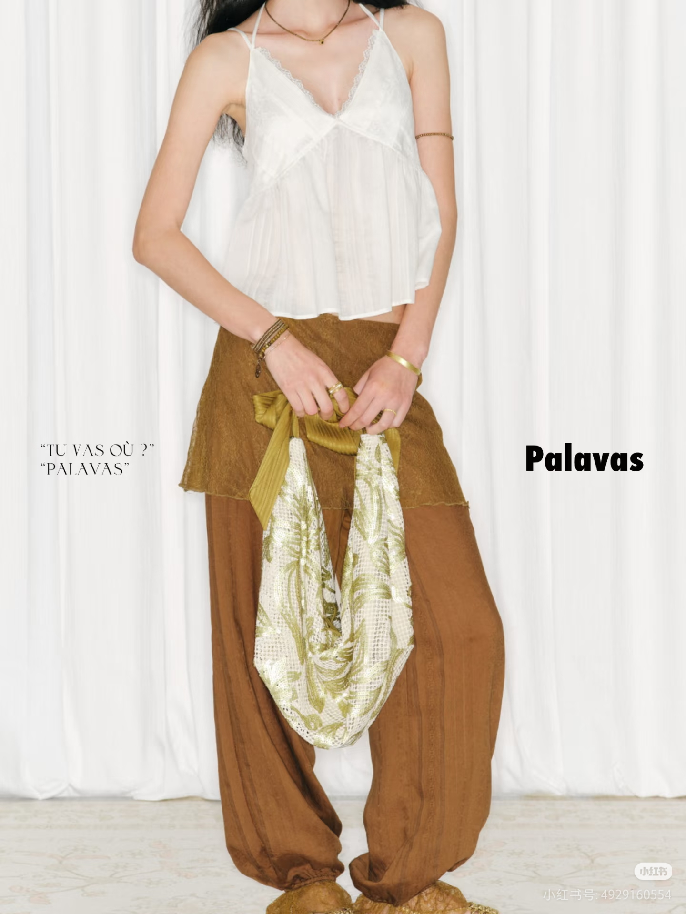

搭配不是加法，而是关系
Styling is not accumulation. It is negotiation.
Palavas 卖的不限于衣服，而是一种被设计好的想象。好的搭配，让元素彼此说话。

颜色呼应：深棕色在搭配上形成微妙共鸣，深浅差异带来灵动的层次感。

线条呼应：上衣斜襟线条与半裙拼接线条遥相呼应，颜色跳跃但不失协调。

材质对话：圣山雪盐吊带 + 西域浮城长裤，蕾丝与蕾丝之间的互相成就。

案例分析
Color in Conversation
Palavas 的这一套官方搭配给我的第一印象是“从泥土里长出的花朵”，传递一种被稳稳托住的实在感，以及花朵独自盛放的孤傲，而非传统的复古少女感。
粉色的下摆浮在花苞裤之上，陪伴但不限制。花苞裤露出的深棕色边缘，恰到好处地点缀上衣，让人无法忽略它的存在。